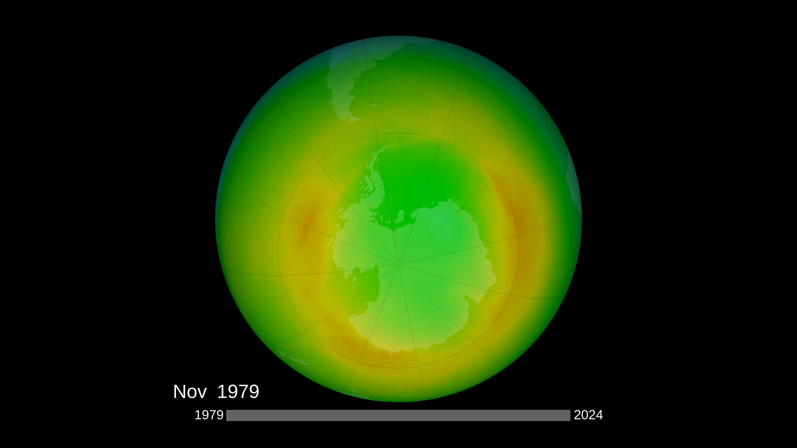

This project contrasts two atmospheric narratives: how global cooperation through the Montreal Protocol (1987) has helped the ozone layer recover, and how unregulated data center and AI infrastructure are driving new carbon emissions. Read together, they show how policy can either repair the atmosphere or lock in future climate risk.
The Montreal Protocol: A Timeline of Global Action
The Montreal Protocol, signed in 1987, is often described as one of humanity’s most successful environmental treaties. It followed decades of scientific warnings about chlorofluorocarbons (CFCs), chemicals used in refrigeration and aerosols that were found to destroy the ozone layer. Through coordinated global action, nations agreed to phase out these substances, and satellite data now shows a gradual healing of the ozone layer — clear evidence that science, regulation, and collective action can reverse planetary damage.
The Protocol has continued to evolve as science and technology have advanced. Amendments such as those adopted in London and Kigali expanded its scope to include additional substances like hydrochlorofluorocarbons (HCFCs) and hydrofluorocarbons (HFCs). This living framework shows how international regulation can translate data into environmental recovery — a precedent for today’s challenge of governing carbon emissions from energy‑intensive digital infrastructure.
1974
Mario Molina and F. Sherwood Rowland discover that CFCs destroy ozone molecules, marking the beginning of modern atmospheric chemistry awareness.
1985
Vienna Convention for the Protection of the Ozone Layer is adopted, establishing a scientific and legal framework for international cooperation.
1987
The Montreal Protocol is signed by 46 countries, committing to phase out ozone-depleting substances like CFCs and halons.
1990
London Amendments strengthen phaseout deadlines and provide funding for developing nations to transition away from harmful chemicals.
2016
Kigali Amendment expands the Protocol to include HFCs, linking ozone recovery with climate action by targeting greenhouse gases.
2024
NASA and WMO confirm record ozone recovery over Antarctica, projecting near-complete restoration of pre-1980 ozone levels by mid-century.
Ozone Recovery After the Montreal Protocol
The Montreal Protocol (1987) is widely recognized as one of the most effective international environmental agreements. By banning ozone‑depleting substances such as CFCs and halons, it set in motion a measurable recovery of the ozone layer within just a few decades. Using NASA satellite products (merged MOD data and OMI observations), we visualize the long‑term change in global ozone concentration from the late 1970s to the present.
Global Total Column Ozone — 1979–2024
Global total column ozone (DU)
About this data: The graph shows the global mean total column ozone measured in
Dobson Units (DU). One DU represents a 0.01 mm‑thick layer of pure ozone at standard conditions.
Higher DU values mean stronger protection from ultraviolet radiation, while lower DU values indicate depletion.
The decline in the 1980s–1990s corresponds to widespread CFC use, while the stabilization and recovery after 2000 reflect
the atmospheric impact of the Montreal Protocol.
Data source:
NASA Ozone Watch total column ozone products (1979–2024), aggregated into annual global means
using processed MOD/OMI datasets.
Spatial Recovery: Ozone Distribution Over Time
Scroll through time to see how policy turned atmospheric data into visible change.
This global ozone map highlights key milestones — from the peak depletion years
to signs of atmospheric recovery after the Montreal Protocol.

1970
1987 — Montreal Protocol Global treaty to phase out ozone-depleting substances.
2000 — Early Recovery Signs of stabilization and recovery begin to appear.
2023 — Ongoing Recovery Marked improvement compared to peak depletion years.
Data source:
Ozone distribution images adapted from
NASA Ozone Watch
Antarctic ozone visualizations (1979–2024).
Where Are Data Centers Located?
This interactive map shows the distribution of data centers. As part of our comparison,
it makes the usually invisible footprint of digital infrastructure visible in space.
Data source:
Geocoded NYC data centers derived from
NYC Building Energy and Water Data Disclosure for Local Law 84 (2020–2024).
The Rise of Data Centers and CO₂
The digital revolution has created a new kind of invisible footprint. Data centers — the physical engines behind AI and cloud computing — account for a rapidly growing share of global electricity demand. Unlike ozone‑depleting chemicals, this infrastructure is still largely unregulated, concentrating energy use, water consumption, and CO₂ emissions in specific regions across the U.S.
Data sources:
data center statistics from
The Environmental Footprint of Data Centers in the United States
(Md Abu Bakar Siddik, Arman Shehabi, Landon Marston) and
Environmental Burden of United States Data Centers in the Artificial Intelligence Era
(Gianluca Guidi, Francesca Dominici, Jonathan Gilmour, Kevin Butler, Eric Bell,
Scott Delaney, Falco J. Bargagli-Stoffi).
Country-level data center counts from
Statista – “Data centers worldwide by country”
.
NYC Data Center Energy Footprint
This chart visualizes the energy use trend of data centers in New York City,
linking local infrastructure to the broader national and global carbon‑emissions narrative.
NYC Data Center Energy Line Chart
Data source:
NYC Building Energy and Water Data Disclosure for Local Law 84 (2020–2024).
Regulated vs Unregulated
The Montreal Protocol shows that collective regulation works: over 190 nations agreed to phase out ozone‑depleting chemicals, and the results are visible in the atmosphere today. In contrast, carbon emissions from digital infrastructure continue to rise without consistent global or national policy frameworks. Our visualizations compare how the presence of strong policy versus its absence shapes the trajectory of atmospheric change and environmental recovery.
Policy Works — When It Exists
The ozone layer’s recovery is proof that science‑based policy can shift the atmosphere onto a new path. As we enter a new era of data‑driven and AI‑driven growth, the same urgency and cooperation are needed to govern the emissions of the digital age. If coordinated policy worked once, it can work again — but only if it is extended to the infrastructures that are now driving carbon emissions.